When it’s cloudy, the mountains give a different view. Not as spectacular, but cosy.
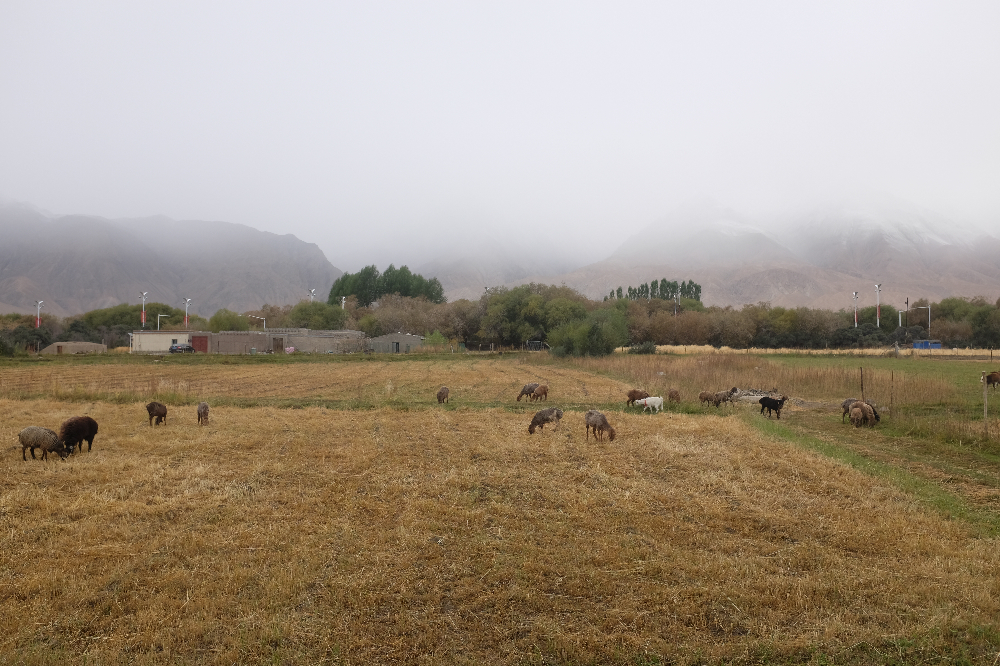
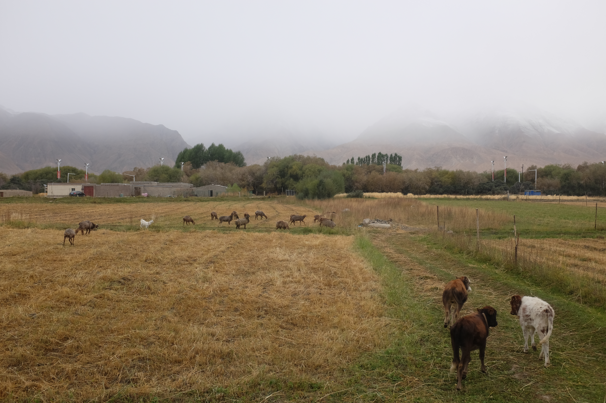
Plains that would otherwise be lit yellow against a blue sky are also a dulled mustard against grey.
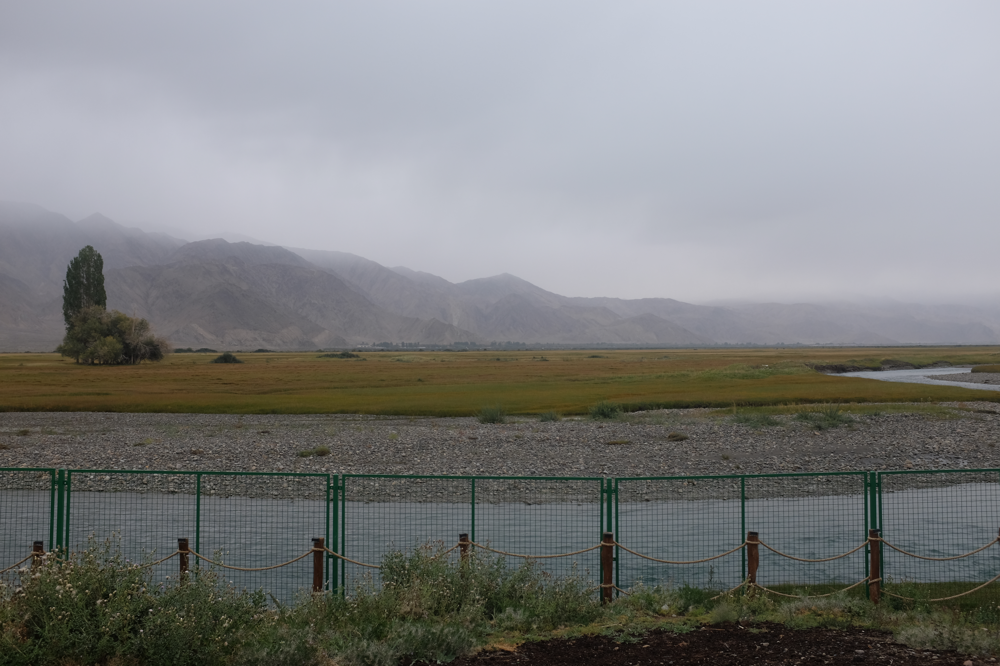
Still, the vastness of quiet encapsulates you. The driver takes me to a man-made site of trees (Treehold Road), and I just take one picture in silence. I’m not sure this place would look any better on a sunny day.
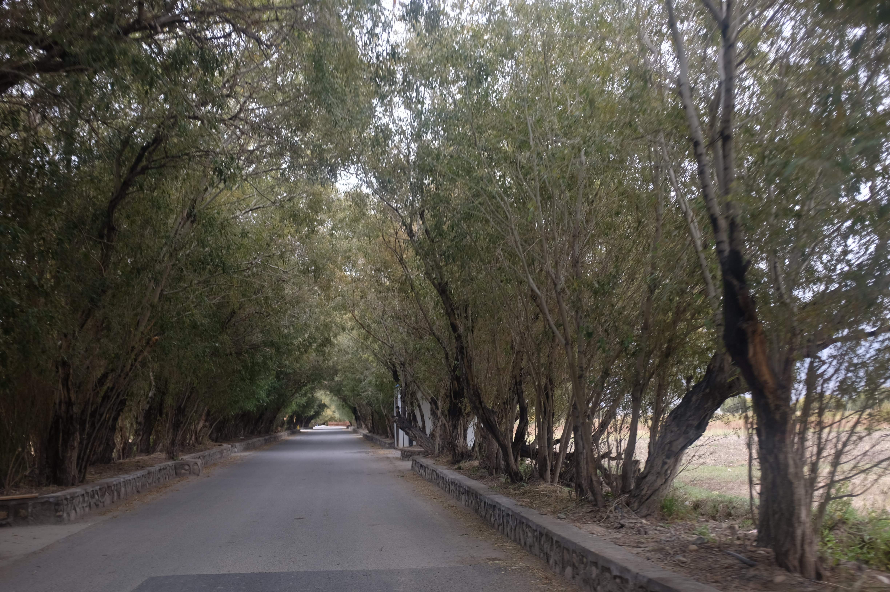
The highlight of today is on the driver’s conscience of having taken me back early to Kashgar because Muztagh-Ata was closed again due to bad weather. The mountain and I aren’t fated to meet this time, but it’s a reason to return. He instead took me to local market (巴合齊鄉巴札) where, for the first time on this trip, I got to experience an old-fashioned bazaar.
There was food everywhere. Here’s an assortment
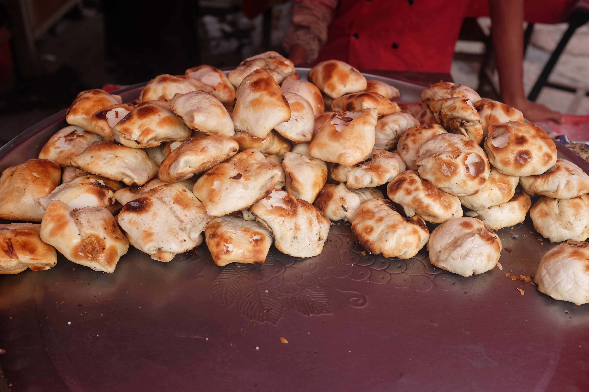
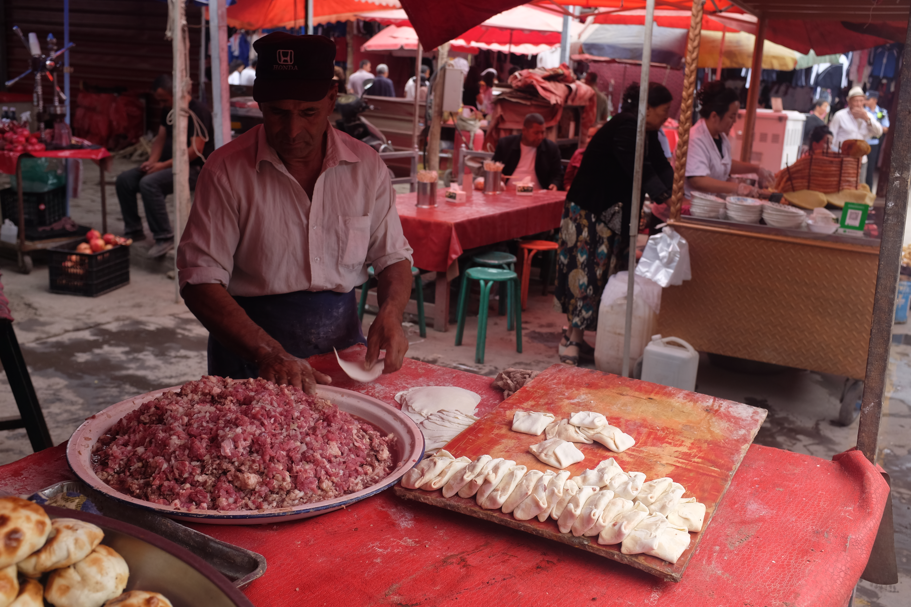
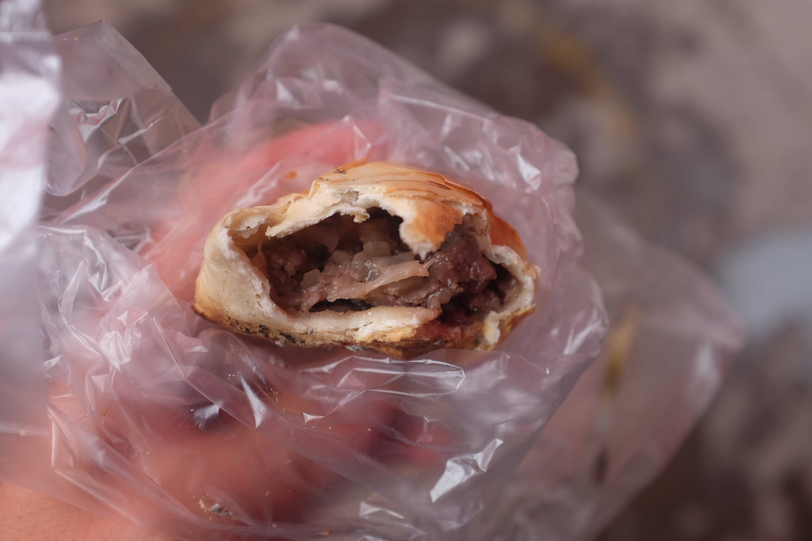
Less satisfactory, but still good was this fluffier bao from a nearby vendor.
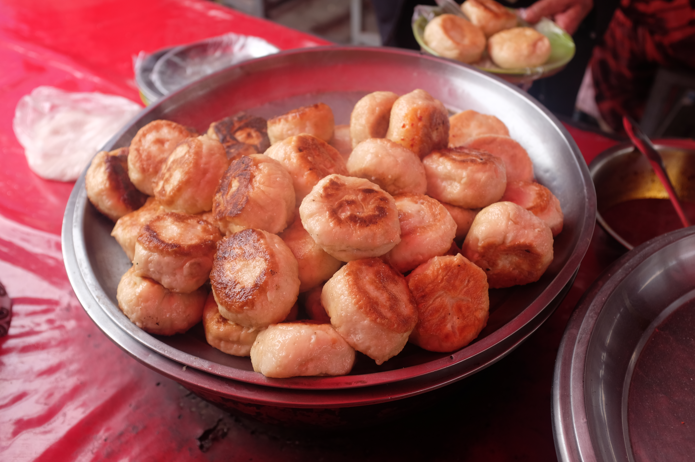
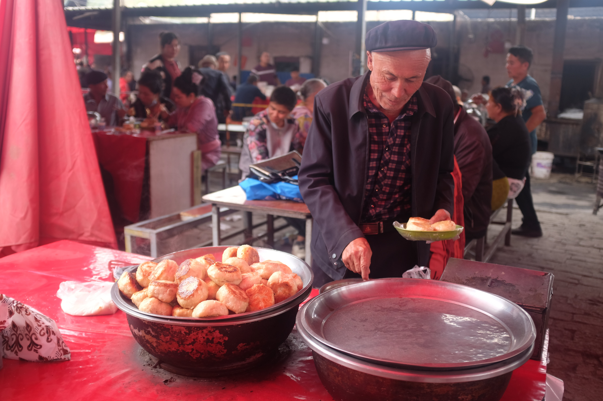
A popular drink in every corner is the pomegranate juice
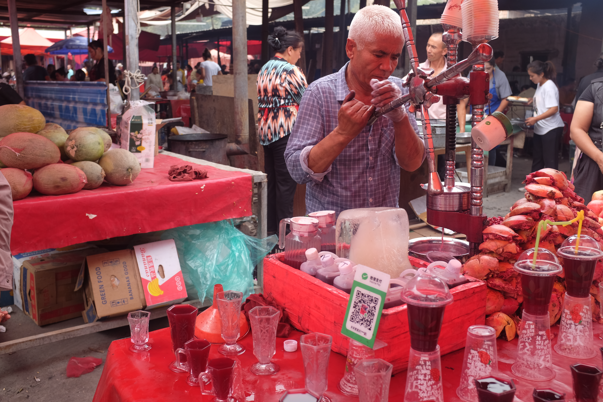
And the most famous: lamb skewers. This one was rubbed in a batter and deep-fried. There were even bones on the skewer.
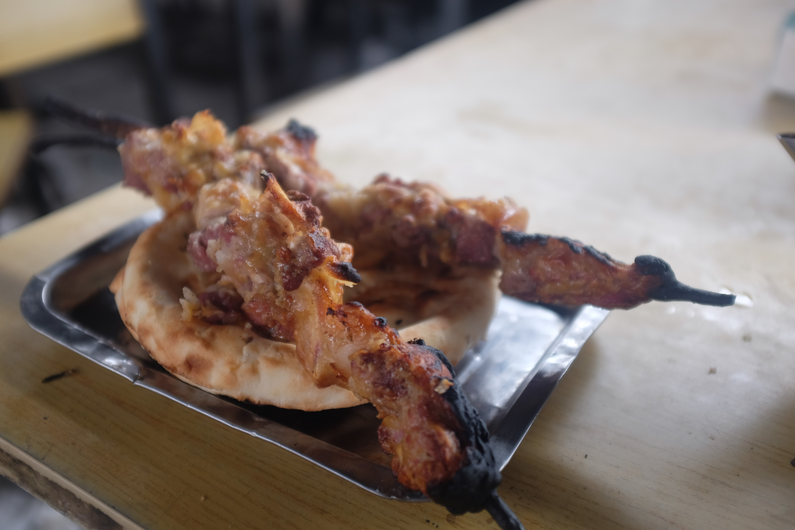
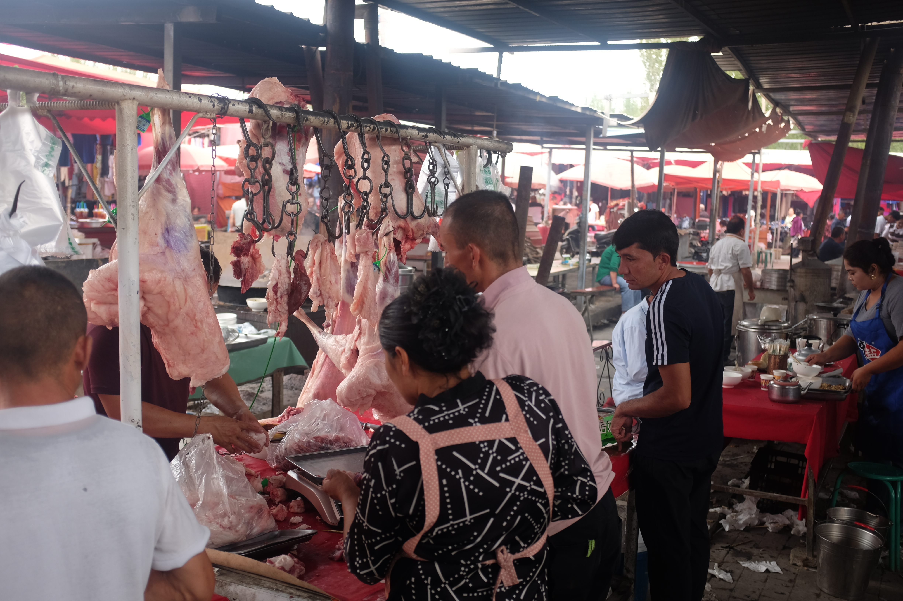
There were few-to-no Han Chinese tourists, and it felt like being in a different country. Here’s a random shot of an egg stand with the types of people at the bazaar. The women here seem to cake on the whitening make-up.
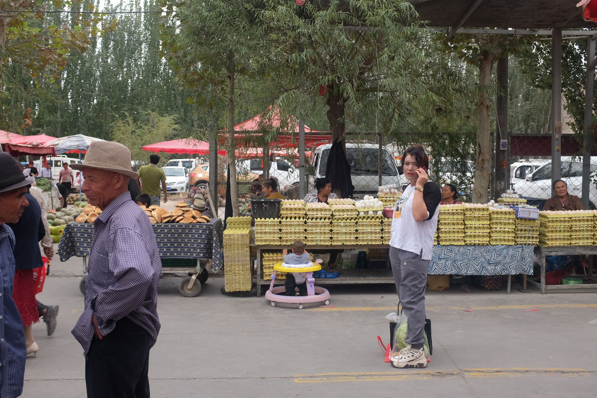
At night, back to Kashgar, and some delicious local food.
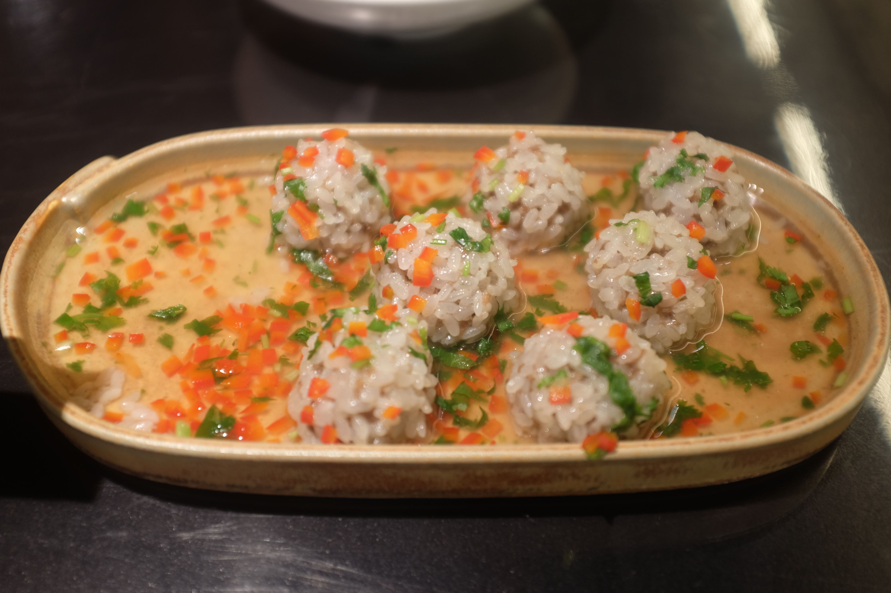
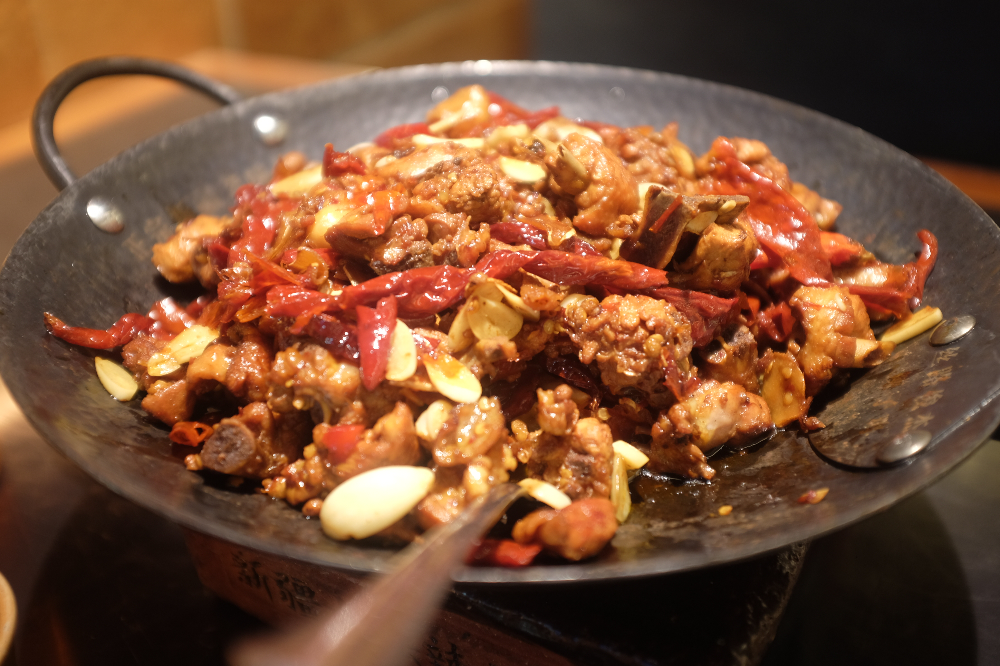